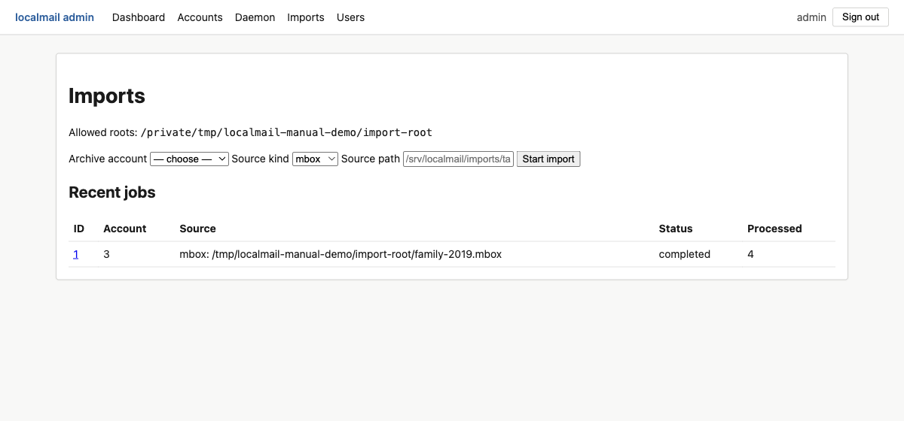
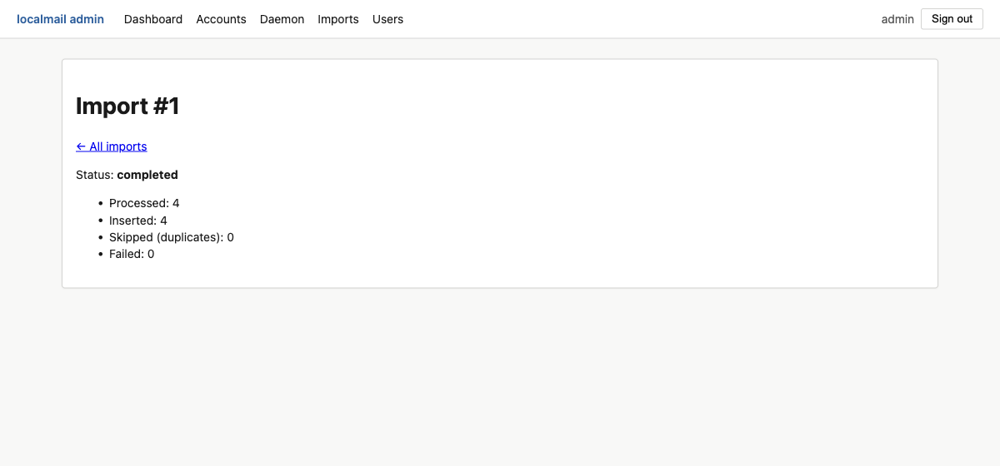

Importing existing mail
Already have years of mail in an mbox file or
a Maildir tree — a Thunderbird export, an old server backup,
a Takeout dump? Import it straight into your archive
alongside the mail localmail mirrors live over IMAP.
How importing fits in
localmail's live sync only ever reads current IMAP folders. Mail
that no longer exists on any server — or never did — gets in through the
import path instead. Imported messages land in the same
messages table, become fully searchable, and share the same
content-addressable attachment store, so a PDF you received twice (once over
IMAP, once in an old backup) is stored on disk exactly once.
| Concept | What to know |
|---|---|
| Target account | Imports go into an archive account — an account with no IMAP host that the daemon never syncs. Create one first (see below). |
| Idempotent | Re-running an import is safe. Already-imported
messages are skipped via the same per-account de-duplication used by
live sync (by Message-Id, or a content hash when there is
none). |
| Received date | Taken from the source: the mbox
From envelope line for mbox, or the file
modification time for Maildir. Stored as the message's internal date so
it sorts correctly in your archive. |
| Formats | mbox (a single file) and
maildir (a directory of one-file-per-message). |
Before you import
-
Create an archive account.
From the admin UI (Accounts → New account → auth method
archive), or by adding anarchiveaccount toconfig.tomland runninglocalmail init-db. Give it a memorable name likefamily-archive. -
Allowlist the source directory.
For safety, imports may only read from directories you explicitly list. Set an allowlist under
[imports]inconfig.tomland restartserve:[imports] roots = ["/home/you/mail-archives"]A source path must resolve (after following symlinks) under one of these roots. An empty
rootslist means imports are disabled.
Option A — from the CLI
The quickest path for a one-off bulk load. It runs in the foreground and prints the final counts:
localmail import /home/you/mail-archives/family-2019.mbox \
--account family-archive --kind mbox
localmail import /home/you/mail-archives/old-maildir \
--account family-archive --kind maildirstatus=completed processed=4 inserted=4 skipped_dup=0 failed=0The target must be an archive account, and only one import
may run at a time (a database busy-guard prevents two concurrent imports
from racing). Like every other localmail operation, a single unparseable
message is isolated and counted under failed rather than
aborting the whole run.
Option B — from the admin UI
The Imports panel does the same thing with a form, and adds live progress and a cancel button — handy for large archives you want to watch.

Click a job to watch it run. The detail page updates as messages are processed and offers a Cancel button; cancellation is cooperative and takes effect at the next checkpoint.

If serve restarts while a panel-started import was
running, that job is reconciled to failed on startup so it
never looks stuck — a CLI import running in its own process is left
alone. Re-run the import; the idempotent skip means you won't get
duplicates.
What gets searched
Imported messages are indexed for search exactly like synced mail. To
make their attachment text and embeddings searchable too, run the same
backfill steps you'd run after a first sync — see
the CLI backfill workflow
(extract-backfill, embed-backfill,
lang-backfill).